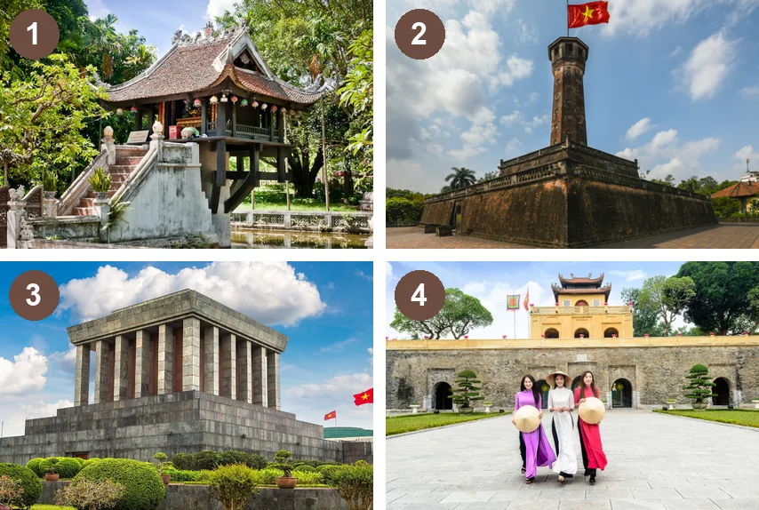
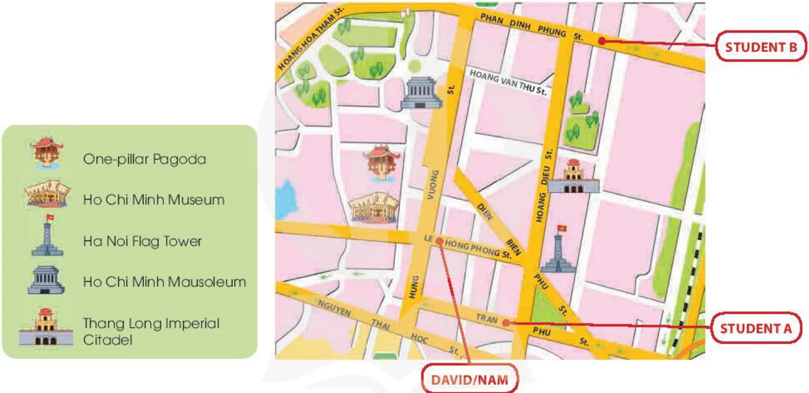
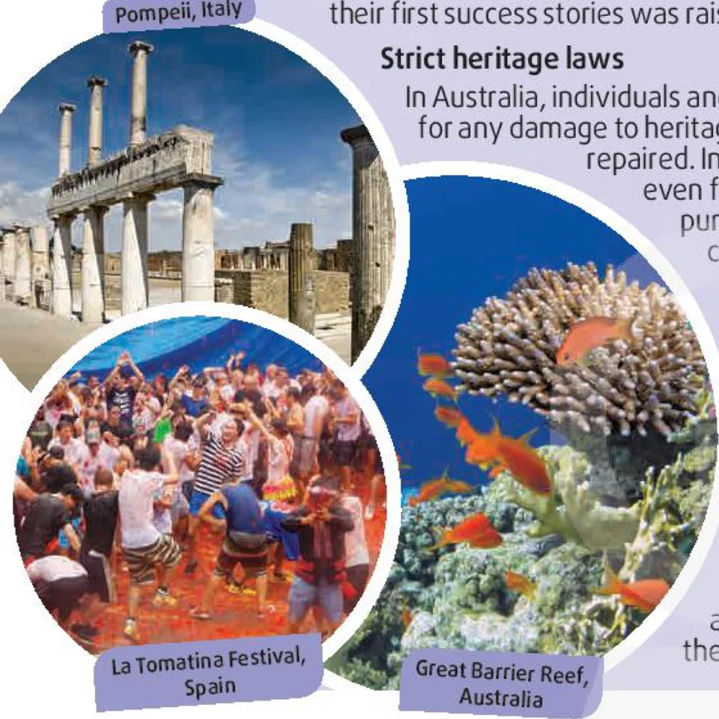

Culture connects us
Lesson 7 — Communication and Culture
6Four stops in 45 minutes
- 🏛️
Landmarks
Warm-up
5 min - 🧭
Everyday English
Asking for and giving directions
20 min - 🌍
Culture
Heritage around the world
17 min - ✅
Wrap-up
Exit ticket
3 min
Warm-up
Where is it?
5 minutesLandmarks in Ha Noi

1. One Pillar Pagoda
2. Ha Noi Flag Tower
3. Ho Chi Minh Mausoleum
4. Thang Long Imperial Citadel
Everyday English
Asking for and giving directions
20 minutesA. could you tell me the way to · B. turn left · C. on your right · D. Go straight ahead
David: Excuse me, (1) A · could you tell me the way to Thang Long Imperial Citadel? I’m lost.
Nam: Sure. The citadel is not far from here. (2) D · Go straight ahead until you get to Hoang Dieu Street, then (3) B · turn left. Walk past Ha Noi Flag Tower and you’ll see it (4) C · on your right.
David: Thank you.
From Le Hong Phong Street to the citadel

Directions
Asking for directions
Can you tell me the way to …?
Excuse me, is … near here?
How do / can I get to …?
Which is the best / easiest way to …?
Giving directions
Go straight ahead / on. · Walk along … street.
Walk past the … · Turn left / right at / into …
Take the first / second turning on the left.
It’s on your left / right. · It’s next to / opposite / behind …
Make similar conversations
- 🏛️
Situation 1
A asks for directions to Ho Chi Minh Mausoleum. B gives directions.
- 🚩
Situation 2
B asks for directions to Ha Noi Flag Tower. A gives directions.
Ho Chi Minh Mausoleum
Ha Noi Flag Tower
Culture
Preserving heritage around the world
17 minutesWords in the text
- crowdfunding (n) /ˈkraʊdfʌndɪŋ/ huy động vốn từ cộng đồng
- non-profit (adj) /ˌnɒn ˈprɒfɪt/ phi lợi nhuận
Words in the text
- regardless of (prep) /rɪˈɡɑːdləs əv/ bất kể
- fine (n) /faɪn/ tiền phạt
Words in the text
- unique (adj) /juˈniːk/ độc đáo, duy nhất
Three countries · three methods

💰 Crowdfunding for heritage!
⚖️ Strict heritage laws
🎉 Tourism works!
Preserving heritage around the world
Crowdfunding for heritage! Preserving their heritage can present a challenge to many nations, especially if they have a large number of heritage sites, like Italy does. However, the country has found a new method of raising money for heritage projects from a large number of individuals and businesses – crowdfunding. For example, loveitaly, a non-profit organisation, uses its website to reach all the people around the world who love Italy, and collects donations from everyone who wants to help. One of their first success stories was raising enough money to restore an ancient site in Pompeii.
Preserving heritage around the world
Strict heritage laws In Australia, individuals and companies have to pay a fine of AU$1,000 to AU$5,000 for any damage to heritage sites or objects, regardless of whether they can be repaired. In some cases, the fines are heavier, and people could even face time in prison. The authorities hope the harsher punishments can stop people from destroying or damaging cultural sites and items, and prevent heritage crime.
Preserving heritage around the world
Tourism works! Spain is one of the countries that has successfully promoted its cultural heritage through tourism. For many years, festivals such as La Tomatina (in which people throw tomatoes at each other) or Las Fallas (a five-day festival of fireworks and light shows) in Valencia have attracted millions of local and foreign tourists. The unique architecture in Barcelona, home to nine UNESCO World Heritage Sites, and Santiago de Compostela’s Old Town, which is also on the world heritage list, are famous all over the world.
Italy, Spain or Australia?
1. raises money from the public for restoring its heritage? Italy
2. organises successful festivals that attract visitors from around the world? Spain
3. fines people heavily if they damage its heritage? Australia
What would work best in Viet Nam?
- 💰
Crowdfunding
donation boxes · online fundraising
- ⚖️
Strict laws
fines for damaging sites
- 🎉
Tourism
festivals · heritage tours
I think … works best in Viet Nam because … · For example, …
One lesson, three takeaways
- 🧭
one phrase for directions
- 🌍
one new cultural fact
- 🇻🇳
one method for Viet Nam
Homework
1. Do the Communication and Culture exercises in the workbook.
2. Write directions from your school to a place nearby.
3. Get ready for Lesson 8 — Looking back and Project.